Лорен Тан в сети подписывается poteto. Она работала с кодом в Meta, Netflix и Cursor, а в core-команде React делает React Compiler. В мае её скиллы для агентов возглавили внутренний рейтинг Cursor, и она открыла их набором pstack. По её подсчёту, с ним выходит 2000–2500 PR в месяц. Код пишут, проверяют и мержат агенты. 4 октября я попросил агента поставить pstack в мой Claude Code и проверить, что работает без Cursor.
Гайд для тех, кто работает с агентом один на один в Claude Code или Cursor. Один PR нескольким агентам вы ещё не отдавали. Команд здесь мало. Больше про устройство: кто пишет код, кто проверяет, когда агент мержит сам и что делает человек. Её цифры идут как её подсчёт, рядом с критикой. В конце то, что можно забрать к себе даже без сотни агентов.
Скорость без качества меня как цель не интересует.
Лорен Тан, README pstack, перевод
Что такое pstack и откуда он взялся
pstack это 50 скиллов в публичном репозитории Cursor, cursor/plugins. Лорен перенесла туда свои рабочие скиллы. Внутри Cursor главный из них называется /lauren-mode, пишет она сама. Набор появился 23 мая, почти все коммиты в нём её.
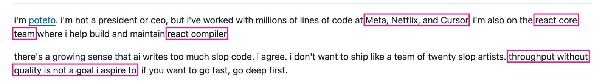
В те же дни в статье «How I Use Cursor» она показала внутренний рейтинг компании. За неделю её скиллы запустили 9 тысяч раз, почти три четверти запусков сделали агенты. Пересказы The Neuron и блогеров округлили это до «10 000 запусков».
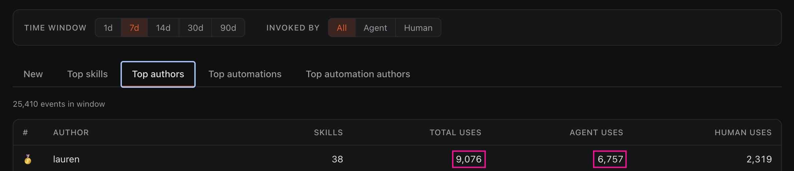
Внутри три слоя.
/poteto-mode
Главный скилл с 23 плейбуками.
24 скилла-принципа
По одному правилу в каждом: «сначала убери лишнее», «докажи, что работает», «не жди человека».
Рабочие инструменты
Для прямого вызова: разбор чужого кода, проверка разными моделями, поиск того, что ещё сломает правка.
Скилла для планов нет: Лорен пишет, что в планы не верит и лучшая спецификация для неё это код.
Слова, которые встретятся дальше:
- PR и мерж
- PR, пулл-реквест: предложенная правка кода, которую смотрят перед тем, как она попадёт в общую версию проекта. Мерж: момент, когда правку вливают. Для меня это граница, после которой чужая ошибка становится общей.
- Скилл
- Папка с инструкцией для агента, как делать одну работу. Агент читает её сам, когда задача подходит, или по команде через косую черту.
- Плейбук
- Сценарий на целый тип задачи: починить баг, довести PR до мержа, вести проект несколько дней. Внутри шаги по порядку и правило, что считать готовым.
- Субагент
- Помощник, которого главный агент запускает на отдельный кусок работы. В pstack у каждого своя роль: писать код, вести PR, проверять.
- Рой проверки
- Несколько субагентов, которые одновременно проверяют один PR с разных сторон и выносят вердикт. Код они не писали, поэтому защищать им нечего.
Как работает /poteto-mode
Почти любую задачу Лорен начинает одной командой: /poteto-mode и дальше обычными словами. Пример из её README: «в этом PR скролл съезжает каждые 750 мс, даже когда ничего не происходит. Сначала воспроизведи, потом почини и проверь».
Скилл работает как диспетчер: читает просьбу и выбирает один из 23 плейбуков. Среди них починка бага, новая функция, прототип, присмотр за PR, ночная работа. Шаги плейбука агент дословно копирует в свой список дел. Пропущенный шаг остаётся в списке с причиной, так видно, что сделано и что нет.
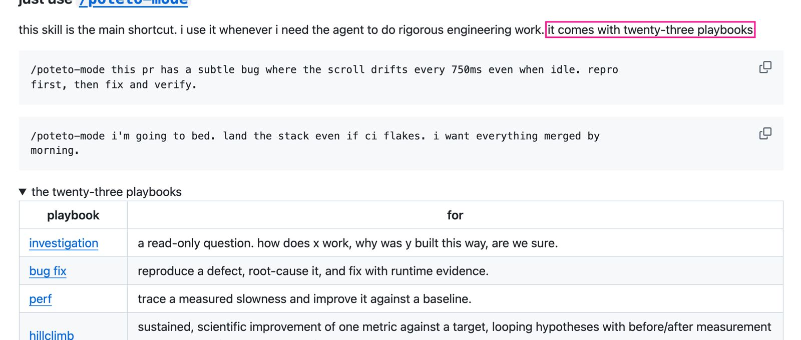
Поверх плейбуков работает свод правил. Агент называет принципы, которые повлияли на решение. Если ответ можно увидеть запуском, человека он не спрашивает: делает быстрый прототип и смотрит результат.
Каждое утверждение идёт с пометкой: измерено, выведено или догадка. Обратимую работу агент делает без спроса. Спрашивает только перед необратимым: перезаписью общей истории кода, деплоем, удалением данных, письмами клиентам. Для текста тоже правила: короткие фразы, ни одного длинного тире. У меня так же.
Как агенты ведут PR от первой строки до мержа
Самое интересное в pstack: как агенты ведут много PR сразу. Для этого три плейбука: orchestrate для проекта на несколько дней, autopilot-full и autopilot-stack для очереди PR. Роли в них одни и те же.
Координатор код не пишет. Так и сказано в плейбуке: программа его, код никогда. Его работа: писать брифы, разбирать очередь завершённых задач и решать. Бриф с пустым обязательным полем он в работу не отдаёт.
На каждый PR свой владелец, отдельный агент в облаке Cursor. Примерно через 15 минут после старта он открывает PR сразу готовым к ревью, без черновика. Потом доказывает, что правка работает, разбирает замечания бота-ревьюера и чистит лишнее. Если что-то сломалось, порядок такой: конфликты, потом обсуждения в ревью, потом CI, то есть автоматические тесты на каждую новую версию.
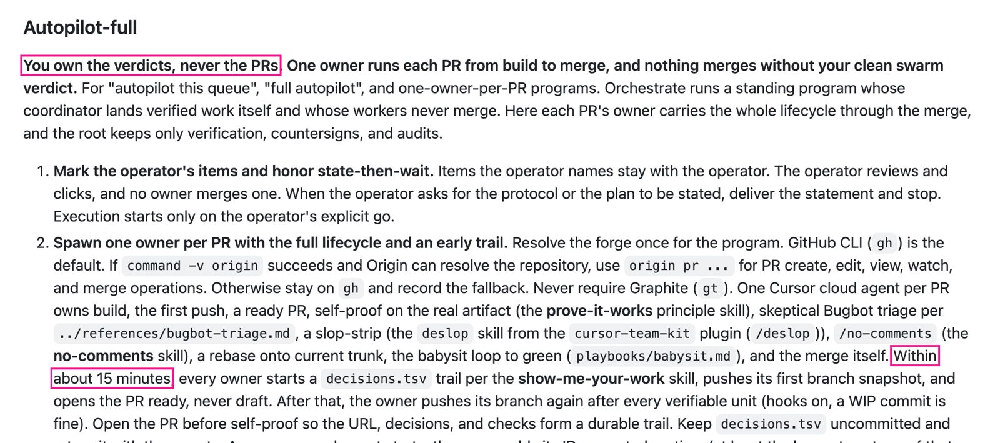
Вердикт выносит рой. Один из агентов обязательно запускает приложение и сам проходит изменённый путь. Другой сравнивает поведение с основной веткой. Ещё минимум двое читают изменения. Без живой проверки вердикт чистым не считается. Зелёный CI здесь только входной билет. Новый пуш отменяет вердикт, и проверка идёт заново.
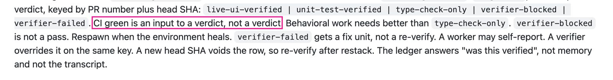
Дальше два режима. В режиме full владелец мержит сам после чистого вердикта роя. В режиме stack агенты не мержат: проверенные PR встают в одну цепочку, её смотрит и вливает человек. Stack подходит, когда правки связаны или прав на мерж у агентов нет. Главное правило записано в плейбуке shipping.
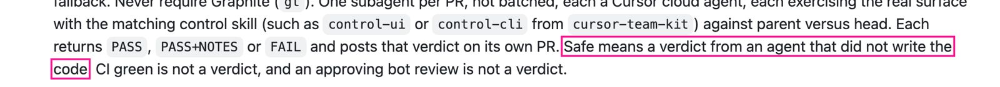
Что остаётся человеку. Выбрать режим и сказать «go»: просьба показать план стартом не считается. Утвердить план и новые дизайны. Ответить на гейты, то есть на необратимые действия и решения о продукте. В плейбуке orchestrate человек заглядывает дважды в день, вопрос «продолжать ли?» до него не доходит. И читать код после мержа, как делает сама Лорен.
Под разные роли разные модели. По умолчанию код пишет Grok 4.7, суждения и тексты достаются Opus 5.5. Сама Лорен в сентябре писала, что координатором ставит Fable, рабочими Grok.
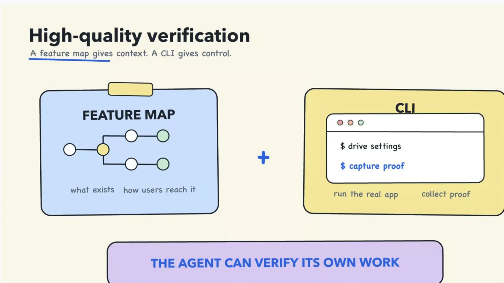
Как она дошла до автомержа
К автомержу Лорен шла по шагам, это видно по её постам.
- МайУзкое место у агентов это проверка. Запускать параллельно агентов, которым ещё не доверяешь, значит жечь токены и копить мусор в коде. Статья 25 мая.
- ИюньКонвейер «разобрать баг, воспроизвести, починить». Любая стадия может остановить линию, на выходе черновик PR для человека. Её правило: цикл становится автономным, только когда заслужил доверие. Пост 24 июня.
- ИюльВместо одного проверяющего рой. Раньше она запускала одного, потому что дорого. Пост 29 июля.
- АвгустТри шага (2 августа): переписать кодовую базу, чтобы агенты писали хороший код по умолчанию. Дать им скилл проверки и рой на каждый PR. Включить full autopilot. Агенты сами чинят найденные баги и мержат (8 августа). Коммиты она читает уже после мержа (19 августа).
- Сентябрь«Мои агенты мержат свои PR, люди их не ревьюят» (22 сентября). За месяц до этого она писала, что критичные места кода смотрит человек (29 августа). Единого правила нет, у разных проектов разный уровень доверия.
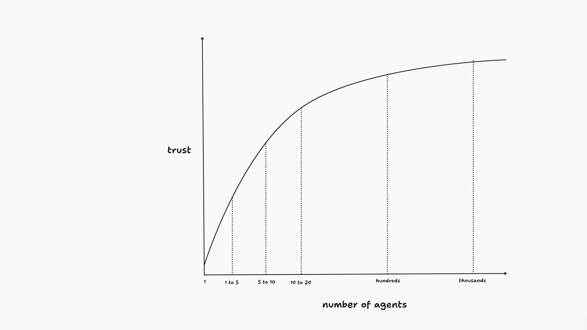
Каждую правку человека она старается сделать ненужной. Лестница из её поста: сначала убрать проблему архитектурой, потом ловить её линтом или тестом, потом записать в скилл. Ревью человеком стоит последним, с припиской ngmi, на сленге «не прокатит».
Можно ли этому верить
Все цифры ниже её собственные. Открытого дашборда, по которому их можно пересчитать, нет.
PR в месяц · её подсчёт
- Июльза месяц
- Августв месяц, в продакшен
- Сентябрь и октябрь«за прошлый месяц» в докладе и в разговоре с Мэттом Пококом
PR за полгода на слайде доклада
токенов в день, «наверное, около», пишет она
агентов, почти все облачные, и 1,5 триллиона токенов в её профиле в Cursor на 3 октября. За какой срок, со страницы не понять
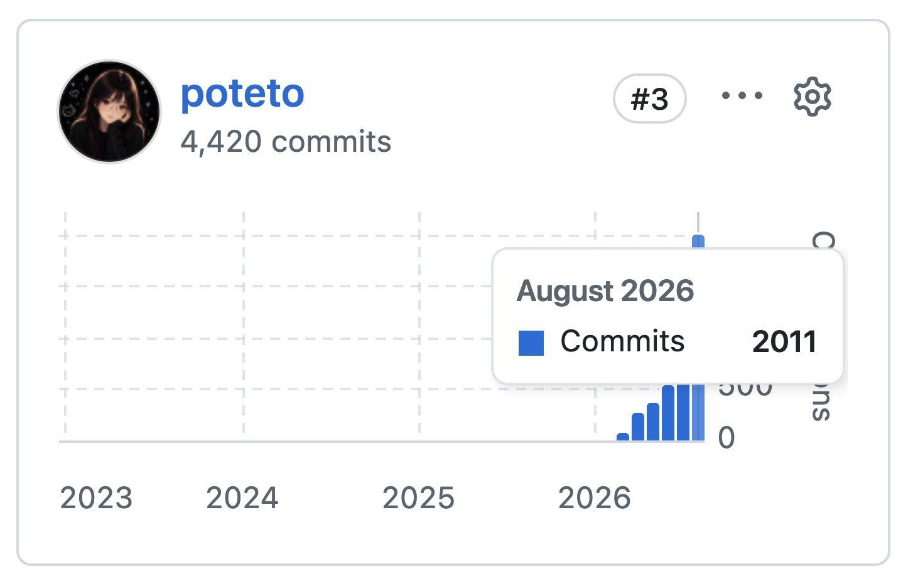
Есть нестыковка: 21 сентября «прошлый месяц» это август, а 31 августа она писала про 2000. В той же статье она назвала объём PR метрикой тщеславия. Скептику в X она ответила, что график коммитов снят с общего монорепозитория команды, и добавила: сомневаться полезно. И 2000 PR в месяц выходят в кодовой базе Grok Bot, которую она, по её словам, спроектировала под такую работу.
Критики. Квентин Галлуэдек из Hugging Face считает рамку «2000 PR в месяц» вредной для больших open-source проектов. Мейнтейнеров заливают проверенными PR, которые решают никому не нужные задачи. Марк Лик отвечает, что без ревью метод живёт только в закрытой системе с сильным CI. Ещё один комментатор пишет, что узкое место просто переезжает в ревью.
Отдельно цена. Лорен сама предупреждала, что много агентов на сильных моделях жгут дорогие токены, а рост расходов трудно посчитать. У одного пользователя на Reddit включённый лимит Cursor ушёл до 80% сразу. У другого расход вырос с миллионов токенов до миллиардов. В комментариях спрашивают, как при таком потоке устроены тестирование и аудит безопасности, когда PR одобряют агенты.
Как поставить pstack в Claude Code и что там не работает
В Cursor pstack ставится командой /add-plugin pstack. В Claude Code такого плагина нет, но скиллы это обычные папки с инструкцией, и Claude Code читает их так же. Поэтому я написал агенту одну фразу.
установи пистек на эту систему
Скачал pstack, но подключить его в Claude Code не получилось: автоматический режим не разрешил мне менять папки скиллов и агентов. Эту запись обходить не буду, её нужно сделать тебе.
Что уже готово. Взял из репозитория cursor/plugins только две папки: pstack и cursor-team-kit. Проверил имена: скиллы pstack не совпадают с твоими.
Чтобы подключить, запусти одну команду. Она создаёт ссылки на скиллы и двух агентов, а занятые имена пропускает.
Что работать не будет: /setup-pstack пишет правило Cursor, poteto-mode ссылается на инструменты и модели Cursor. Я бы вызывал pstack точечно: /interrogate, /correct, /blast-radius.
pstack подключён: 53 скилла и 2 агента. /poteto-mode пиши в начале сообщения, сам агент его не включит. Добавил pstack и эти ограничения в реестр возможностей.
Скачал и проверил агент сам. Подключать скиллы автоматический режим ему запретил: это правка его собственной конфигурации. Запрет агент обходить не стал, одну команду запустил я. Папка cursor-team-kit нужна ради трёх скиллов, на которые ссылается pstack. Реестр возможностей живёт в моём штабе: это папка с правилами и знаниями для моих агентов.
Хотите так же, скажите агенту: «поставь pstack из github.com/cursor/plugins в Claude Code».
Что агент сделал внутри
git clone --filter=blob:none --sparse https://github.com/cursor/plugins.git cursor-plugins
cd cursor-plugins && git sparse-checkout set pstack cursor-team-kit
# эту часть автоматический режим не дал, её запустил я:
R=~/Documents/GitHub/cursor-plugins
for d in $R/pstack/skills/*/ $R/cursor-team-kit/skills/{deslop,control-cli,control-ui}/; do
b=$(basename $d); [ -e ~/.claude/skills/$b ] || ln -s ${d%/} ~/.claude/skills/$b
done
for a in poteto-agent comment-sicko; do
[ -e ~/.claude/agents/$a.md ] || ln -s $R/pstack/agents/$a.md ~/.claude/agents/$a.md
done
# обновление: git -C ~/Documents/GitHub/cursor-plugins pull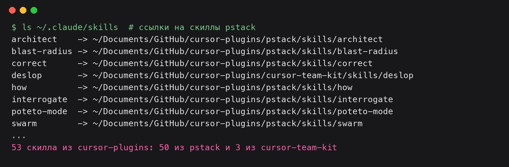
Потом я попросил агента спросить у /poteto-mode, как он выбирает плейбук. Ответ пришёл по правилам pstack: короткие фразы и пометка в конце, откуда знание.
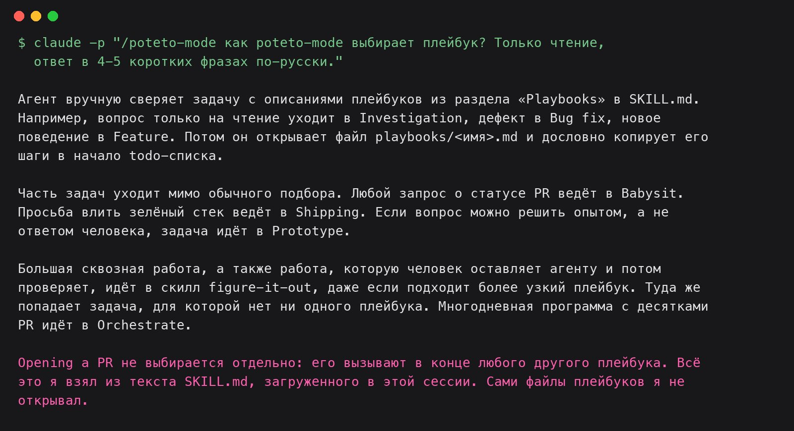
Что работает иначе, чем в Cursor:
- /setup-pstack не работает. Он записывает правило для Cursor, какую модель брать на какую роль. Claude Code это правило не читает.
- poteto-mode написан под инструменты Cursor. Вопрос человеку там идёт через AskQuestion, субагенты через Task, модели Cursor вроде Grok и GPT. В Claude Code субагенты работают на моделях Claude. Значит, проверка «другой моделью» идёт той же семьёй моделей. Это выведено из текста скиллов, замера у меня нет.
- Облака Cursor нет. Облачные агенты, бот-ревьюер Bugbot и хостинг кода Origin это продукты Cursor. Рой из десятков облачных агентов на каждый PR в Claude Code так не собрать.
- Правила спорят с моими. poteto-mode разрешает агенту писать в чаты и тикеты без вопроса. У меня он уступает правилам штаба, а там без спроса никому не пишут.
Не я один пробую. Есть неофициальный порт pstack для Claude Code и Codex. Расмус Хьюлсков пишет, что с pstack локально в Claude Code ему работается заметно лучше.
Что забрать к себе, даже без автопилота
Сотня облачных агентов нужна не всем. Вот пять скиллов, которые я бы взял первыми. Каждый вызывается напрямую, а /interrogate, /correct и /blast-radius агент сам не запустит: их пишут в начале сообщения.
- /interrogate. Несколько проверяющих пытаются сломать ваши изменения с разных сторон, один строго смотрит качество кода. Один комментатор на Hacker News пишет, что из публичных скиллов пользуется только им.
- /correct. Находит ошибки, которые агенты повторяют в проекте, и делает каждую невозможной: архитектурой, типами, линтом, тестом, документацией в последнюю очередь. Каждое новое правило проверяется на настоящей прошлой ошибке.
- /blast-radius. Ищет, что ещё может сломать маленькая правка за пределами самих изменений. Главный факт «почему это безопасно» доказывается запуском кода.
- /how. Объясняет, как устроена часть проекта, перед тем как её менять.
- /swarm. Раздаёт куски задачи параллельным помощникам и собирает один общий отчёт.
Ещё ценнее идеи pstack. Они работают для любой задачи, которую вы отдаёте агенту.
Проверяет тот, кто не писал
Автор правки видит то, что хотел сделать, и пропускает то, что сделал на самом деле. Поэтому вердикт выносит отдельный агент. Как в редакции: после автора текст всегда читает корректор.
Зелёные тесты ещё не вердикт
Тесты проверяют то, что в них заложили. Живая проверка в настоящем приложении ловит остальное. Как с машиной: прежде чем подписать акт, на ней проезжают круг.
Факт проверяют запуском
Если ответ можно увидеть запуском, агент делает быстрый прототип и решает по результату. Вкус и продукт остаются человеку. Как с пиджаком: размер выясняют примеркой.
Каждое утверждение с пометкой
Измерено, выведено или догадка. Так сразу видно, где можно опереться, а где нужно проверить. Как у врача: анализы и подозрения он записывает в разные графы.
Доверие выдают по шагам
Сначала агент учится доказывать, что всё работает, потом присылает черновики, потом цепочку на ревью, и только потом мержит сам. Как с новым сотрудником: первые недели он работает рядом с наставником.
Повторная правка становится правилом
Если поправили агента второй раз, ошибку закрывают архитектурой, линтом или тестом, текстом в последнюю очередь. Как в подъезде: вместо таблички «не хлопайте дверью» ставят доводчик.
В мае Лорен мержила сама и писала, что узкое место это проверка. В сентябре агенты мержат за неё, а сама она пишет, что спит по 8–9 часов. Между этими точками четыре месяца работы над проверкой. Где на этой дуге вы, видно по одному вопросу: что ваш агент вправе смержить ночью, пока вы спите?
Если соберёте свой поток PR на pstack или на своих скиллах, приходите рассказать в чат вайбкодеров. Разборы таких штук выходят в канале «рис. AI».
pstack: репозиторий, README, poteto-mode, плейбуки orchestrate, autopilot-full, autopilot-stack, babysit, shipping. Лорен Тан: @poteto в X, статья «How I Use Cursor», статья о pstack, часть 1, доклад «how i shipped 2,500 PRs last month». Пересказ про «10 000 запусков»: The Neuron. Неофициальный порт: pstack-claude. Цифры Лорен приведены по её постам, срез на 4 октября 2026. Цитаты из английских источников даны в моём переводе.